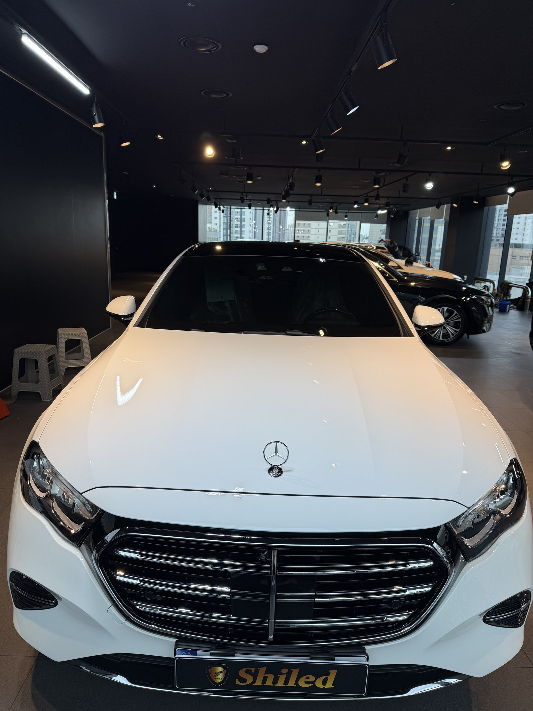
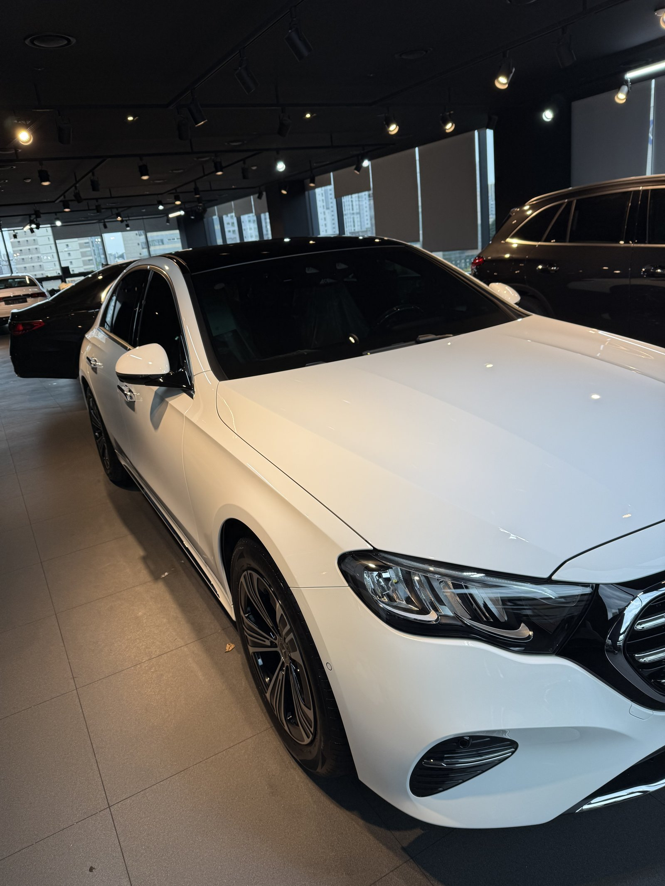
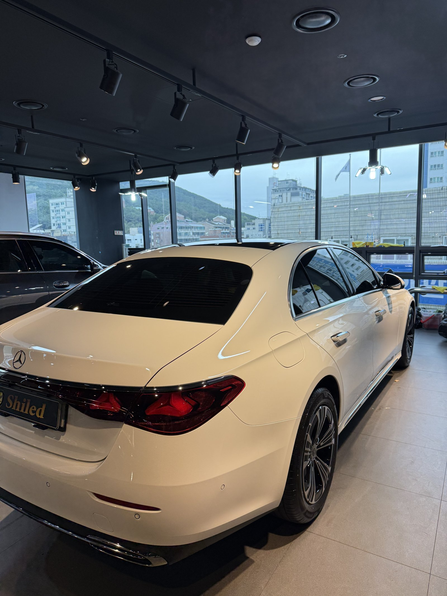
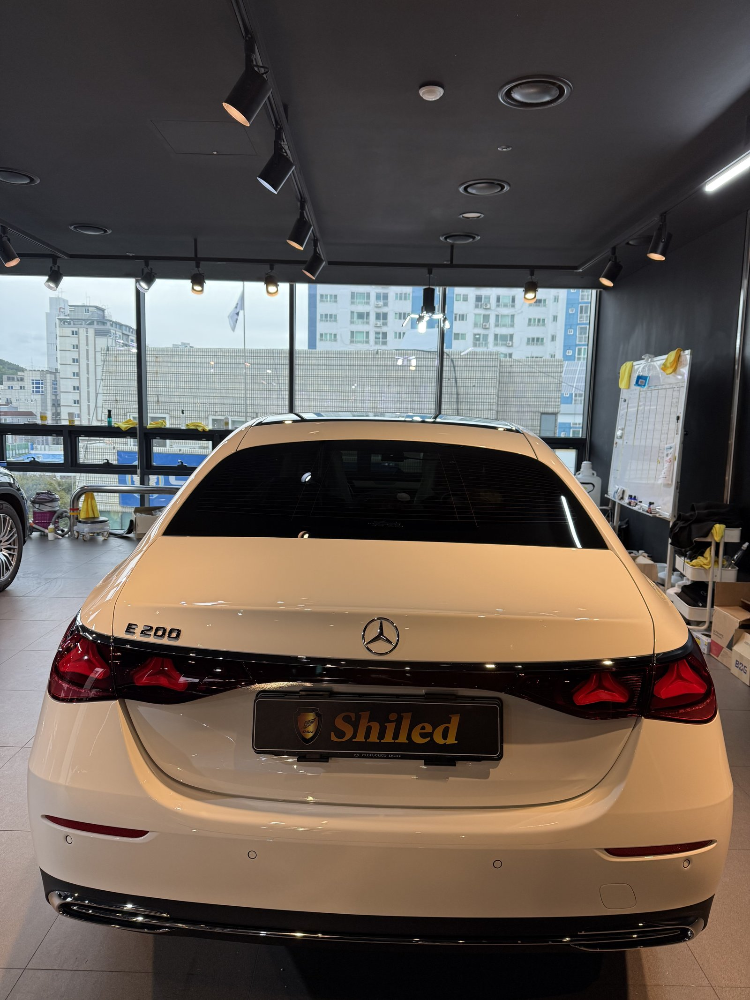
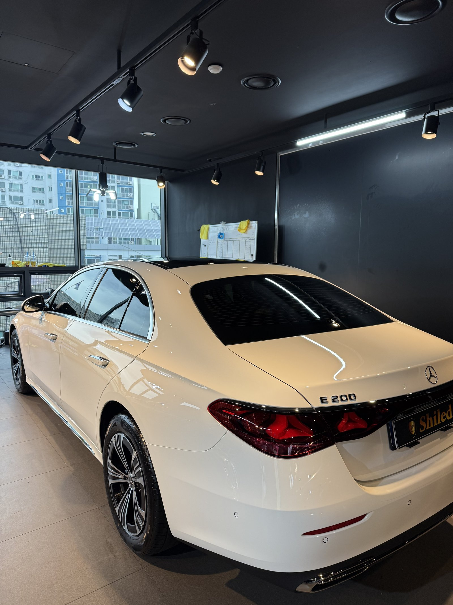
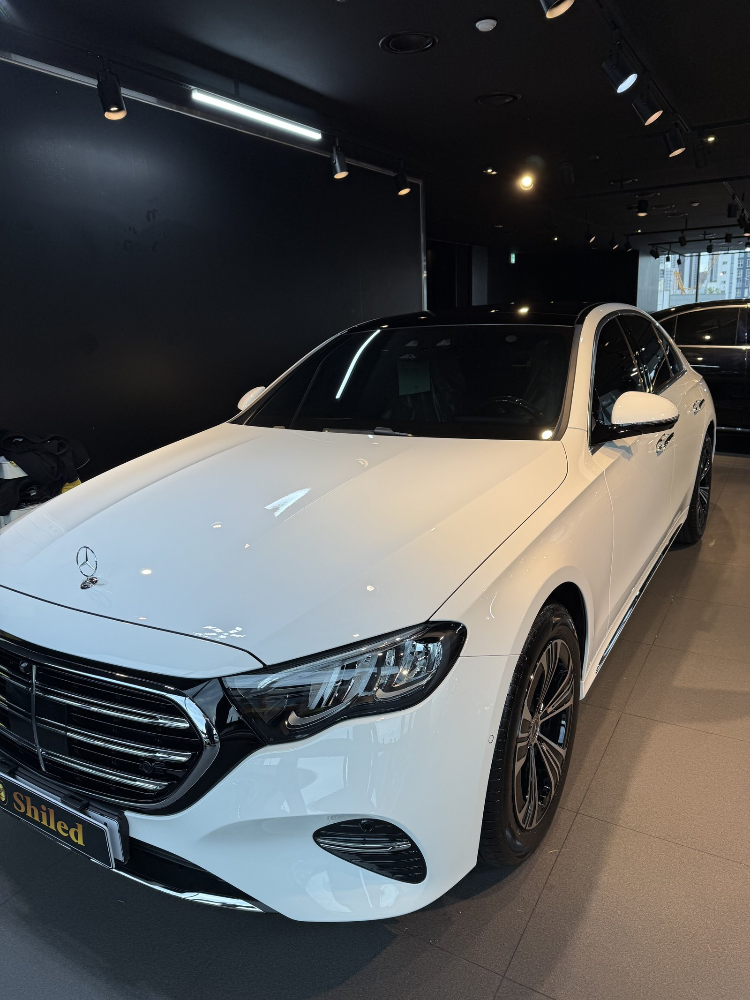
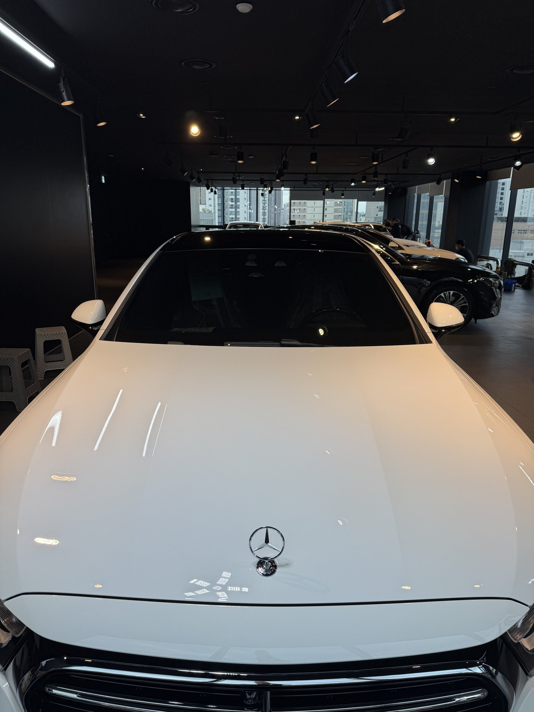
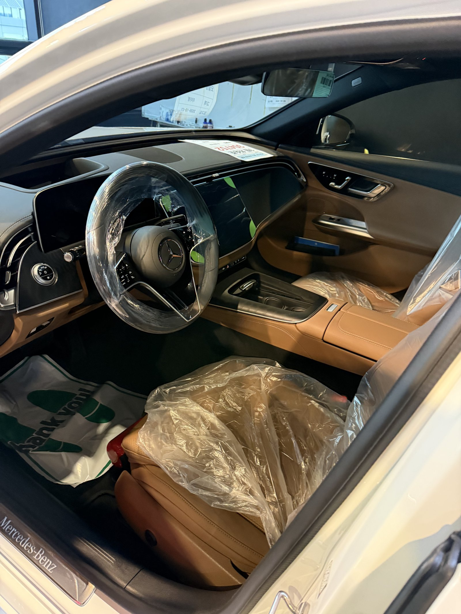
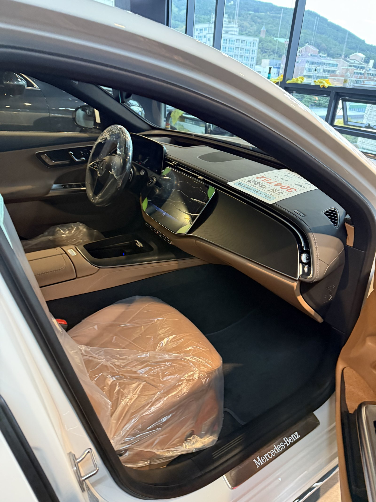
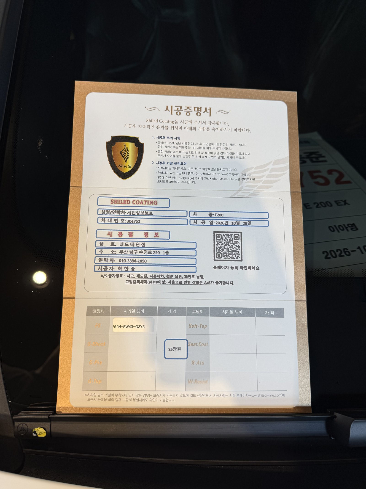

벤츠 E200 익스클루시브, 백색 신차입니다.
창 너머 산과 건물이 트렁크에 비치던 낮에 마무리했습니다.
출고 전 F5로 진행한 부산 유리막코팅 기록입니다.

창가 쪽으로 뒤를 돌려 보는 이유는요?
밝은 배경이 비칠 때 흰 면의 결이 보이기 때문입니다.
흰 차는 어두운 배경에서는 면이 평평하게만 보입니다.
창밖 풍경이 트렁크와 C필러에 비치면 굴곡과 잔여물이 드러납니다.
뒤 펜더에서 트렁크로 넘어가는 면을 따라 확인했습니다.



익스클루시브 앞모습은 어떻게 마무리하나요?
가로 크롬 그릴과 보닛 위 스탠딩 엠블럼이 특징입니다.
엠블럼 받침 둘레와 그릴 위 보닛 끝선을 따로 닦았습니다.
흰 면과 크롬 경계에 코팅제가 남지 않게 마감했습니다.



기술자의 팁
흰 차는 비 온 뒤 문 아래쪽과 사이드 스커트에 흙탕물 자국이 먼저 생깁니다. 차체 아래쪽부터 물로 충분히 불린 뒤 닦아 주십시오.
백색 E200 익스클루시브에 F5를 올린 이유
F5는 색감의 깊이와 글로시함에 특화된 코팅입니다.
흰색은 F5를 올리면 맑은 흰빛이 오래 유지됩니다.
실내는 브라운 가죽에 넓은 디스플레이가 이어지는 구성입니다.
코팅제는 대표가 직접 개발·제조한 제품입니다.
이번 부산 유리막코팅은 F5 싱글로 진행했습니다.


시공증명서도 함께 드립니다
모든 시공 차량에 시공증명서를 드립니다.
차종·시공일·코팅제 시리얼 번호가 적혀 있고, 홈페이지에 등록해 보증을 받으실 수 있습니다.

차종·시공일·코팅제 시리얼이 기재된 시공증명서
자주 묻는 질문
Q. 흰 차는 코팅 잔여물을 어떻게 찾나요?
A. 밝은 배경이 비치는 방향으로 차를 두고 봅니다. 풍경이나 조명이 번지는 자리가 잔여물 자리입니다.
Q. 흰 차 아래쪽 흙탕물 자국은 어떻게 닦나요?
A. 바로 문지르지 마시고 물로 충분히 불린 뒤 닦아야 잔기스가 생기지 않습니다.
Q. 백색 차량도 F5가 맞나요?
A. F5는 색감 특화 코팅이라 흰색의 맑은 톤을 살리는 데 잘 맞습니다. 발수를 더 원하시면 G-TOP도 상담해 드립니다.
Q. 왜 출고 전에 코팅하나요?
A. 도장면이 가장 깨끗할 때 올린 코팅이 가장 오래갑니다. 운행과 세차로 잔기스가 생기기 전에 입혀두는 것이 핵심입니다.
Q. 쉴드광택 위치와 예약은 어떻게 하나요?
A. 부산 남구 유엔로220 1F 쉴드광택입니다. 예약·상담은 010-3384-1850, 대표 최한중이 직접 상담하고 책임 시공합니다.
새 차일수록 시작점이 다릅니다. 가장 깨끗할 때 입혀두십시오.
제품을 직접 만드는 사람이 직접 시공합니다.
부산에서 신차 유리막코팅을 고민 중이시면 편하게 연락 주십시오.
어떤 차를 타냐보다 어떻게 타냐가 중요합니다~!
시공 중에는 전화를 받지 못할 때가 많습니다.
카카오톡으로 차종과 원하시는 시공을 남겨주시면 확인 후 답변드립니다.
쉴드광택 · 부산 남구 유엔로220 1F · 대표 최한중